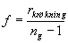
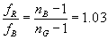

Titta som exempel på en planokonvex lins (en yta plan och en konvex).
Styrkan hos en sådan blir då styrkan hos den krökta ytan,
dvs
Antag att n för blått ljus = nB=1.500
Om vi ska ska ha 1% ändring av n till rött ljus får vi; nG=1.515
Kvoten mellan fokallängderna i Blått och Rött blir då
 dvs 3% ändring
Det är det där med minus ett som gör't!!